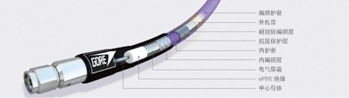
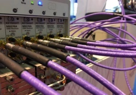
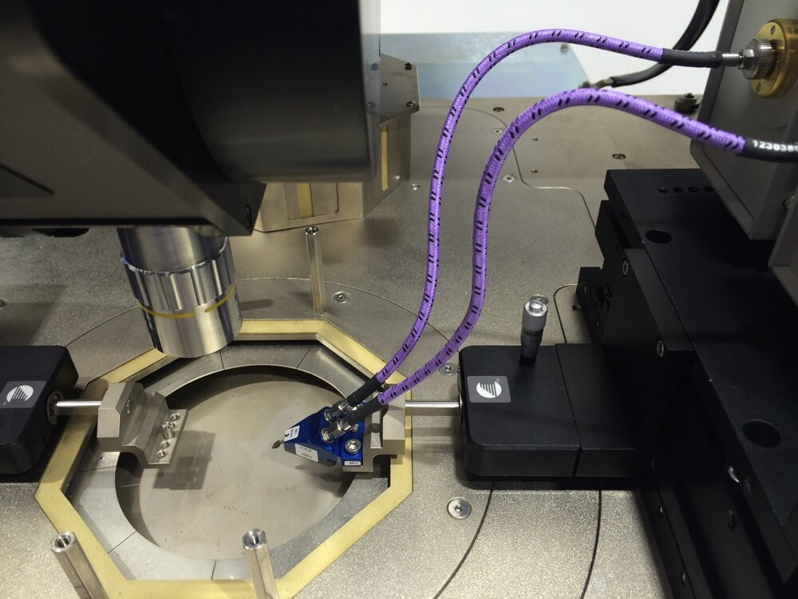
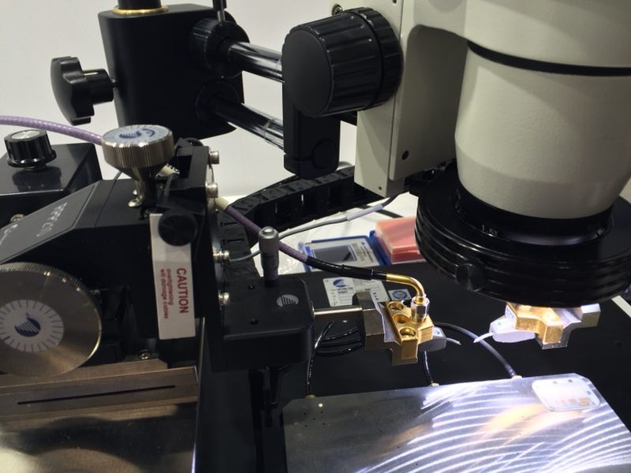
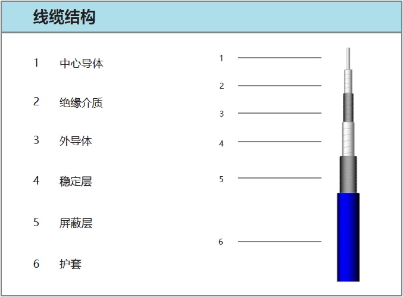
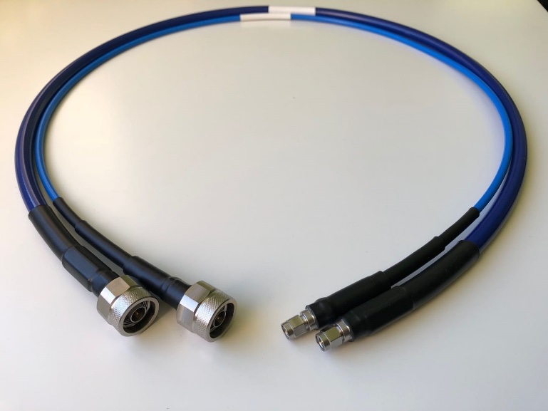
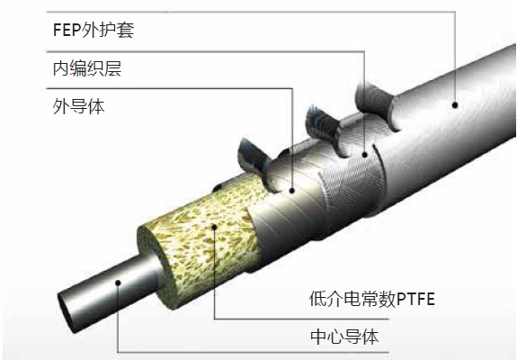
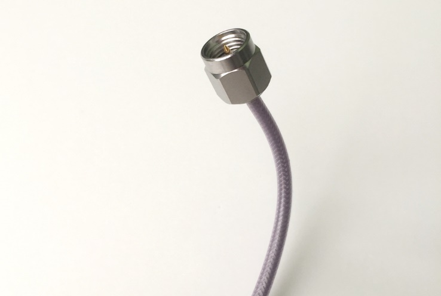

解决方案


GORE 0N Phaseflex小线径内铠甲柔性测试组件（DC~50 GHz）
- 适用场合：
- 需要频繁拆卸，安装和弯折的测试应用
- 连接仪表和DUT，测试夹具或Switch
- 安装密度高，间距小的多端口测试场景
- 特点：
- 5.1mm线径，弯曲半径小，柔性佳，低回弹
- GORE业界知名PHASEFLEX系列，稳相稳幅，经久耐用
- SMA, 3.5mm, 2.92mm和2.4mm接头可选
- 可提供绝对配相定制化组件
- 可配合垂直化力矩扳手使用

Gore 110 GHz Phaseflex内铠甲柔性稳相稳幅测试组件
- 适用场合：
- 需要频繁拆卸，安装和弯折的测试应用
- 微波天线，ODU等点对点子系统实验室和产线测试
- 特点：
- 柔软易布线
- 优异的机械温度稳定性
- 低插损，低VSWR
- 1.0mm公头和母头可配
- 组件长度可定制化

GORE探针台测试组件（DC～110 GHz）
- 适用场合：
- 探针台探针与仪表/夹具互联
- 特点：
- Cascade探针台原厂配套测试组件，行业标杆
- 线径小，弯折半径小, 易布线
- 柔性佳，回弹小，应力小
- 安装前后电气指标稳定
- 专为探针台设计swept right angle接头；2.92mm，2.4mm，1.85mm和1.0mm接头可选


Unipico Test-Pro铠甲柔性测试组件（DC~50 GHz）
- 适用场合：
- 需要频繁拆卸，安装和弯折的测试应用
- 连接仪表和DUT，测试夹具或Switch
- EMC／EMI测试
- 对差损较为敏感的测试场景
- 特点：
- 6mm线径，柔性佳，易布线
- 加强型多层铠甲保护，稳相稳幅，经久耐用
- SMA, 3.5mm, 2.92mm和2.4mm接头可选
- 可提供绝对配相定制化方案


Unipico Test-Plus超小线径铠甲柔性测试组件（DC~67 GHz）
- 适用场合：
- 需要频繁拆卸，安装和弯折的测试应用
- 连接仪表和DUT，测试夹具或Switch
- 安装密度高，间距小的多端口测试场景
- 特点：
- 专为高密度多端口测试互联开发，线径小至4.65mm
- 加强型多层铠甲保护，稳相稳幅，经久耐用
- SMA, 2.92mm，2.4mm和1.85mm接头可选
- 可提供绝对配相定制化方案
- 可配合垂直化力矩扳手使用


Unipico Test-Light小线径柔性测试组件（DC~50 GHz)
- 适用场合：
- 对测试组件柔性要求高，重量要求轻，差损相对敏感的测试应用
- 连接仪表和DUT，测试夹具或Switch
- 测试组件无需频繁插拔和弯折
- 特点：
- 3.6mm线径，弯曲半径小，重量轻，柔性佳，回弹小
- 线缆额外稳定层设计，稳定性和耐用性优于普通组件
- SMA, 3.5mm, 2.92mm和2.4mm接头可选
- 可提供绝对配相定制化方案

Unipico Uni-Test经济型测试组件（DC~18 GHz）
- 适用场合：
- 通信模块及子系统生产测试
- 高低温，EMC/EMI测试
- 测试组件需要频繁插拔和弯折
- 对采购成本较敏感
- 特点：
- 4.85mm线径（不带铠甲情况下）
- 线缆额外稳定层设计，弯曲稳定性好
- 损耗低
- 使用寿命进一步延长（选装铠甲方案），总体测试成本降低


Unipico UniPhase小线径低损稳相柔性互联组件（DC～67 GHz）
- 适用场合：
- 仪表内部，ATE内部, 板间互联
- 一次安装，无需拆卸
- 特点：
- 线径小，柔性佳，回弹小，易布线
- 安装前后电气指标稳定
- 插损较传统solid PTFE同轴组件小40%
- SMA, 3.5mm, 2.92mm，2.4mm，1.85mm，SMP(GPO)和SMPM(GPPO)接头可选
- 可提供绝对配相定制化方案

Unipico Mini-Flex小线径柔性互联组件（DC～18 GHz）
- 适用场合：
- 通讯系统内部互联
- 仪表内部互联
- 板到板互联
- 矩阵开关互联
- ATE系统内部互联
- 特点：
- 无尾管设计，弯折半径更小，适合狭小空间安装
- 线径2.5mm，柔性佳，回弹小，易布线
- 安装前后电气指标稳定
- 屏蔽性能佳，替代半钢电缆首选
- SMA接头可选